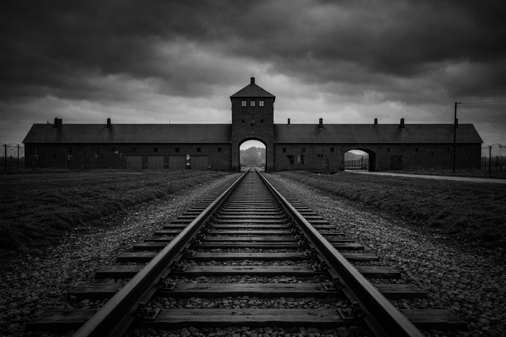
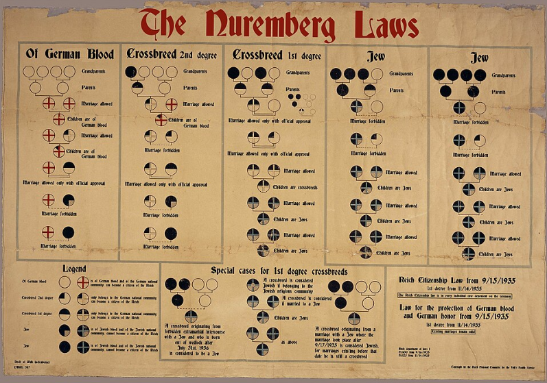
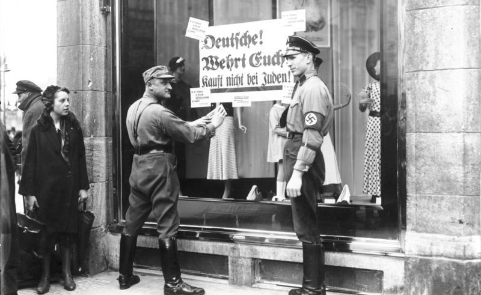
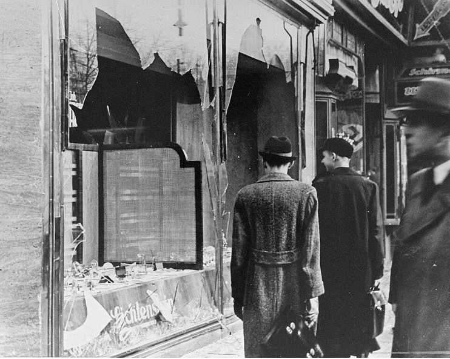
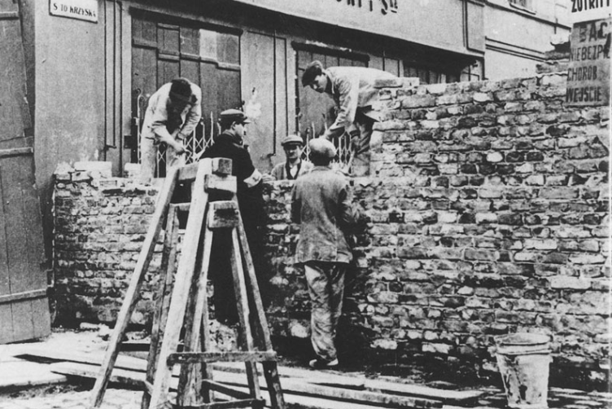
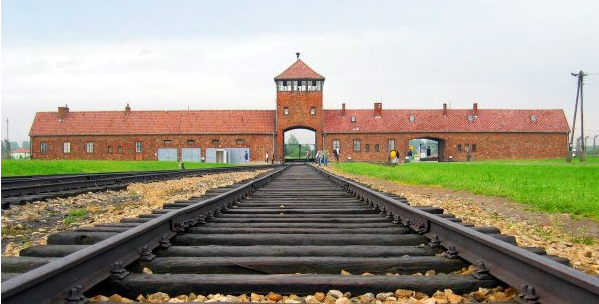
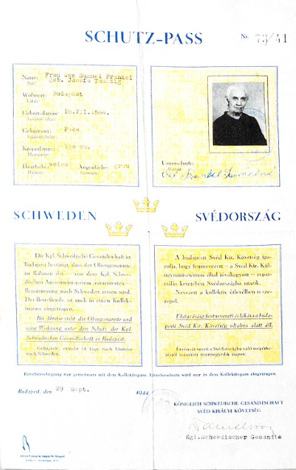
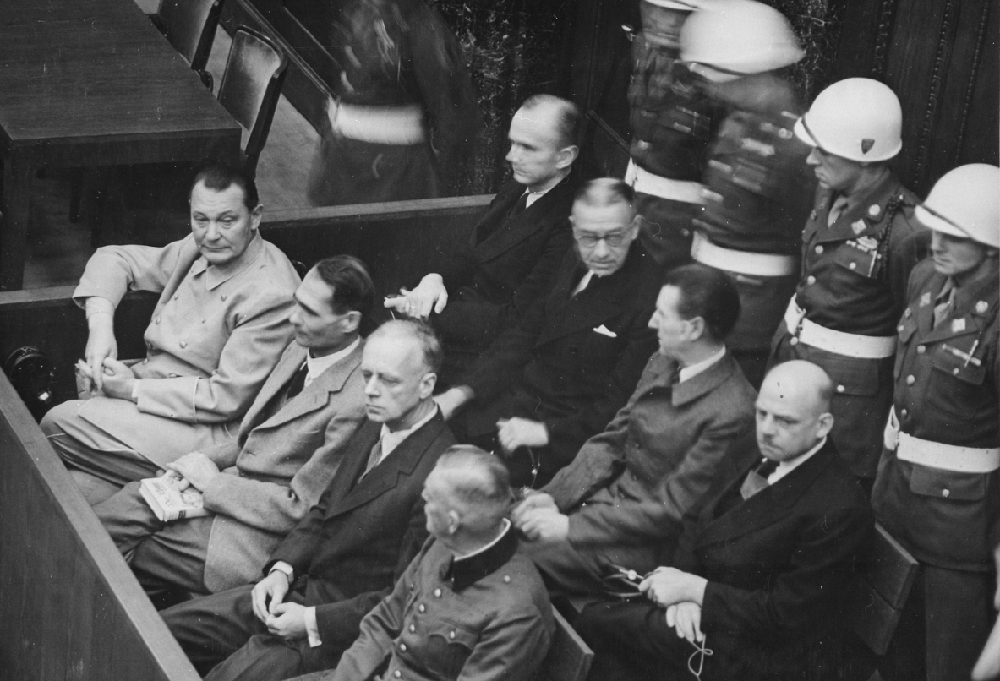
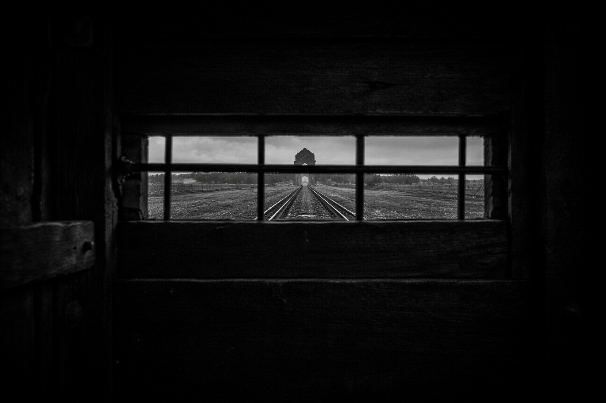

Core Objectives
- Analyze the ideological roots of Nazi anti-Semitism and the escalation of persecution from the Nuremberg Laws to Kristallnacht.
- Trace the development of the "Final Solution," comparing the "Holocaust by bullets" to the industrial murder of the death camps.
- Evaluate the international response to the genocide and the establishment of "crimes against humanity" at the Nuremberg Trials.
Key Terms
The Holocaust | Anti-Semitism | Nuremberg Laws | Kristallnacht | Final Solution | Ghettos | Concentration Camps | Death Camps | Auschwitz | Genocide | Elie Wiesel | Righteous Among the Nations | War Crimes Trials
Introduction | The Descent into Darkness and the Endurance of the Human Spirit
The systematic, state-sponsored murder of approximately six million Jewish people and millions of others by the Nazi regime stands as the most horrific crime of the twentieth century. Rooted in a virulent, pseudo-scientific ideology, the German state transformed traditional prejudices into a biological war, methodically stripping citizens of their rights before escalating to industrial-scale extermination. This section traces the horrific evolution of the Holocaust, from discriminatory laws to the implementation of the "Final Solution," while also highlighting the profound resilience of those who resisted the machinery of death. Ultimately, the liberation of the camps and the subsequent search for justice laid the foundational framework for modern international human rights. By examining this catastrophe, we confront the consequences of unchecked hatred and the enduring imperative to protect the vulnerable

The systematic murder of millions by the Nazi regime was an unprecedented event in human history, fundamentally transforming the understanding of state-sponsored terror. The scale of the genocide required a vast, industrialized infrastructure of death, forever altering international frameworks for human rights.
Analysis Question:
How does the presence of industrial infrastructure, such as railway tracks leading directly into a camp, alter our understanding of how the Holocaust was executed compared to earlier historical massacres?
The Origins of Genocide
The descent into genocide began not with mass murder, but with words and discriminatory laws driven by a radical, pseudo-scientific ideology. The Nazi regime utilized a distorted version of social Darwinism to dehumanize the Jewish people, setting the stage for their systematic exclusion from German society. Through sweeping legislation like the Nuremberg Laws, the state stripped Jews of their citizenship and economic independence, culminating in the state-sponsored violence of Kristallnacht. This marked a terrifying shift from legal discrimination to organized terror, making it violently clear that the Jewish community's very existence in Europe was under threat
The Ideological Foundations of Hatred
The systematic, state-sponsored murder of approximately six million European Jews and millions of others by the Nazi regime remains the most horrific crime of the twentieth century. This event, known today as The Holocaust, was not a random act of wartime violence or a byproduct of the chaos of conflict. Instead, it was the calculated result of a radical racial ideology that had been central to the National Socialist movement since its earliest days in the beer halls of Munich. To understand the scale of this tragedy, historians must look beyond the military history of World War II and examine the intellectual and social structures that made such a catastrophe possible in a modern, industrialized nation.
At the very core of Nazi belief was a virulent and pseudo-scientific form of Anti-Semitism, or hatred of the Jewish people. While prejudice against Jews had existed in Europe for over a thousand years, often rooted in religious differences or economic scapegoating, the Nazis transformed this traditional bigotry into a biological struggle for survival. Adolf Hitler, in his semi-autobiographical manifesto Mein Kampf, argued that history was not a struggle between classes or nations, but a relentless war between races. He claimed that the "Aryan" race—the Germanic peoples—was a "master race" responsible for all human progress, while the Jews were a "counter-race" whose very existence threatened to "poison" the purity of German blood and collapse civilization itself.
This ideology relied heavily on a distorted version of social Darwinism, suggesting that just as animals compete for resources in nature, human "races" were locked in a zero-sum game for territory and dominance. The Nazis used this framework to dehumanize their targets, labeling Jews, Roma, Sinti, and the disabled as Untermenschen (subhumans) or "lives unworthy of life." By framing the "Jewish Question" as a biological emergency rather than a political disagreement, the Nazi state prepared the German public to accept increasingly radical "solutions" that would eventually lead from legal discrimination to industrial-scale extermination.

Analysis Question:
How did the promotion of pseudo-scientific racial theories prepare the German populace to accept the persecution of their Jewish neighbors?
Checkpoint
1. How did the Nazi regime use "social Darwinism" to support their ideology?
The Legal Path to Exclusion
When Hitler was appointed Chancellor in January 1933, the Nazi state immediately began using the law as a weapon to isolate the Jewish community. The first major step was the Law for the Restoration of the Professional Civil Service, which stripped Jewish Germans of their right to hold government jobs. This was followed by a series of decrees that banned Jews from practicing law, medicine, or journalism, and restricted their access to higher education. These early measures were designed to break the economic and social back of the Jewish middle class, forcing them into a state of poverty and desperation that would, the Nazis hoped, lead them to flee the country.
The most significant legislative turning point occurred in September 1935 with the announcement of the Nuremberg Laws. These two laws—the Reich Citizenship Law and the Law for the Protection of German Blood and German Honor—officially institutionalized racial discrimination. The laws stripped Jews of their German citizenship, effectively making them subjects of the state without legal rights. They also forbade marriage or romantic relationships between Jews and non-Jewish Germans. Crucially, the laws defined "Jewishness" not by religious belief or cultural practice, but by ancestry. Even individuals who had converted to Christianity or whose families had been secular for generations were classified as Jews if they had three or four Jewish grandparents.
Following the Nuremberg Laws, the process of "Aryanization" accelerated. This involved the systematic theft of Jewish property and businesses. Jewish owners were forced to sell their shops, factories, and homes to non-Jewish Germans for a tiny fraction of their actual value. This state-sanctioned plunder destroyed the financial independence of the Jewish community and enriched many ordinary Germans who participated in the theft. By 1937, the physical and social walls around the Jewish community were closing in, yet the world remained largely silent as a modern state systematically dismantled the lives of its own citizens based on the fiction of racial science.

Analysis Question:
How did early state-sponsored actions against Jewish-owned businesses affect the economic and social stability of the Jewish community in Germany?
Checkpoint
1. What was a primary consequence of the Nuremberg Laws of 1935?
From Legislation to State-Sponsored Terror
The transition from legal exclusion to open violence occurred on the night of November 9, 1938, in an event known as Kristallnacht, or the "Night of Broken Glass." The pretext for the violence was the assassination of a minor German diplomat in Paris by Herschel Grynszpan, a Jewish teenager whose parents had been brutally expelled from Germany. Using this incident as an excuse, the Nazi government coordinated a nationwide wave of violence. Across Germany, Austria, and the newly occupied Sudetenland, Nazi stormtroopers and their sympathizers attacked Jewish homes, businesses, and houses of worship.
The destruction was catastrophic. More than 7,000 Jewish-owned businesses were looted and destroyed, and hundreds of synagogues were burned to the ground as fire departments stood by and watched, instructed only to prevent the flames from spreading to "Aryan" property. Even more significantly, roughly 30,000 Jewish men were arrested and sent to Concentration Camps like Dachau and Buchenwald. This marked the first time the camp system was used for the mass detention of people simply because they were Jewish. In a final act of cruelty, the Nazi government fined the Jewish community one billion marks to pay for the damage caused by the state-sponsored rioters. Kristallnacht was a clear signal to the world that the Nazi regime had moved beyond discrimination and into the realm of state-organized terror.
Following Kristallnacht, the remaining Jewish population was forced into a state of total social death. They were banned from public parks, theaters, and swimming pools, and were forced to wear a yellow Star of David on their clothing to ensure they were easily identifiable at all times. The goal was to make life so intolerable that the Jewish people would disappear from Germany. However, as the war began in 1939, the Nazi leadership realized that their "Jewish Question" could no longer be solved through emigration alone, especially as they conquered territories with millions of additional Jewish residents in Poland and the Soviet Union.

Analysis Question:
What immediate consequences did the orchestrated violence of Kristallnacht have on the safety and social standing of the Jewish community within Germany?
Checkpoint
1. What was the Nazi regime's response to the violence of Kristallnacht?
Annihilation and Defiance
As World War II expanded across Europe, the Nazi persecution mutated into a continent-wide campaign of extermination. Initially relying on mobile killing squads and the brutal containment of Ghettos during the "Holocaust by bullets," the regime soon pivoted to the horrifyingly efficient "Final Solution"—the industrial-scale murder of millions in specialized death camps. Despite the overwhelming machinery of death designed to crush human dignity, victims did not go passively into the night; Jewish resistance erupted in ghettos, killing centers, and forests, demonstrating an unbreakable spirit in the face of absolute despair.
The Holocaust by Bullets
The outbreak of World War II in September 1939 fundamentally changed the nature of Nazi persecution. As German armies swept through Poland, the SS began the process of rounding up Jewish populations and forcing them into Ghettos. These were segregated, walled-off sections of cities, such as Warsaw and Lodz, where hundreds of thousands of people were crowded into dilapidated housing. The Ghettos were designed to be temporary holding pens where Jews would die of starvation, disease, and overwork. In the Warsaw Ghetto, over 400,000 people were packed into an area of about 1.3 square miles, with as many as nine people sharing a single room.
The most radical escalation of the genocide occurred with the invasion of the Soviet Union in June 1941. As the German Wehrmacht advanced, they were followed by four mobile killing units known as Einsatzgruppen. These units, composed of SS, police, and local collaborators, were tasked with the systematic execution of entire Jewish communities. This phase is often called the "Holocaust by bullets." The method was brutal and personal: the killing squads would enter a town, round up the Jewish men, women, and children, march them to the outskirts, and force them to dig massive pits. The victims were then shot at point-blank range and buried in mass graves.
The scale of the "Holocaust by bullets" was staggering. At Babi Yar, a ravine near the city of Kyiv, the Einsatzgruppen murdered 33,771 Jews in a single two-day operation in September 1941. By the end of the war, these mobile killing units had murdered more than two million people across Eastern Europe and the Soviet Union. However, the Nazi leadership viewed this method as problematic for two reasons: it was too slow to achieve the total elimination of the Jewish people, and the psychological toll of shooting women and children was causing breakdowns among the German soldiers. To solve these "problems" of efficiency and psychology, the Nazi state looked toward the industrial methods of the factory.

Analysis Question:
How did the forced confinement of Jewish populations into overcrowded, walled districts reflect the broader wartime goals of the Nazi regime?
Checkpoint
1. What was the purpose of the Ghettos created in Poland after 1939?
The Industrialization of Death
In January 1942, fifteen high-ranking Nazi officials met at a villa in Wannsee, a suburb of Berlin, to coordinate the logistics of what they called the Final Solution. Led by Reinhard Heydrich and organized by Adolf Eichmann, the Wannsee Conference was not where the decision to commit genocide was made—that had already been decided by Hitler—but rather where the machinery of the state was aligned to carry it out with industrial efficiency. The plan was to deport the entire Jewish population of Europe to specialized Death Camps in occupied Poland.
Unlike Concentration Camps, which were used for detention and slave labor, Death Camps such as Belzec, Sobibor, and Treblinka were essentially "murder factories." They were designed for the sole purpose of mass execution upon arrival. The technology of murder evolved from mobile gas vans to permanent, industrial-scale gas chambers using Zyklon B, a hydrogen cyanide gas originally developed as a pesticide. This "industrialization of death" was intended to distance the killers from their victims, allowing the state to murder thousands of people a day with minimal psychological impact on the perpetrators.
The most notorious of these facilities was Auschwitz-Birkenau. It was a massive complex that served as both a labor camp and a killing center. Victims from across occupied Europe were transported to Auschwitz in crowded, windowless cattle cars, often traveling for days without food or water. Upon arrival, they were subjected to a "selection" process on the train platform. Those deemed fit for work were tattooed with an identification number and sent to live in horrific conditions of slave labor. The elderly, the sick, and mothers with young children were sent immediately to the gas chambers, which were disguised as communal shower rooms to prevent panic and resistance.
Survivors of Auschwitz, such as the writer Elie Wiesel, would later describe the surreal and hellish atmosphere of the camp. In his memoir Night, Wiesel wrote of the "flames that consumed my faith forever" and the "silent blue sky" that offered no intervention. The camp authorities meticulously harvested everything from the victims: their clothes, their shoes, their hair to be used in industrial products, and even the gold fillings from their teeth. This absolute rejection of human dignity transformed the victims into mere "units" to be processed and disposed of, marking a total collapse of morality in the heart of modern Europe.

Analysis Question:
How did the transition to permanent extermination facilities alter the scale and method of the Nazi regime's genocidal campaign?
Checkpoint
1. What was the primary purpose of the Wannsee Conference in 1942?
Defiance and Resistance
A common misconception of the Holocaust is that the victims went to their deaths without a fight. In reality, Jewish resistance occurred at every level of the catastrophe, from the Ghettos to the Death Camps themselves. The most famous example was the Warsaw Ghetto Uprising in the spring of 1943. When the Nazis began the final "liquidation" of the ghetto, a group of young Jewish fighters, armed with smuggled pistols and homemade grenades, launched an armed revolt. They held off the superior might of the German army for nearly a month, forcing the Nazis to burn the ghetto building by building to crush the resistance. While the fighters knew they could not win, they chose to die with dignity and to send a message of defiance to the world.
Resistance also took place in the heart of the killing centers. At Treblinka and Sobibor, prisoners organized armed revolts and managed to blow up parts of the gas chambers and escape into the surrounding forests. In Auschwitz, members of the Sonderkommando—the prisoners forced to work in the crematoria—launched an uprising in October 1944, successfully destroying one of the four main gas chambers. Beyond physical combat, there was also "spiritual resistance." In the face of dehumanization, victims maintained underground schools, held religious services, and created archives, such as the "Oneg Shabbat" in the Warsaw Ghetto, to ensure that their stories would survive even if they did not.
Outside of the camps and ghettos, thousands of Jews escaped into the forests of Poland, Belarus, and Ukraine to join partisan groups. These fighters conducted sabotage against German supply lines and rescued other Jews from certain death. The Bielski partisans, for example, established a "forest village" that protected over 1,200 Jewish men, women, and children. These acts of resistance prove that even under the most extreme conditions of totalitarian terror, the human spirit sought ways to fight back against the machinery of Genocide.

Analysis Question:
What does the willingness to launch an armed revolt against overwhelming military force reveal about the enduring human spirit during the Holocaust?
Checkpoint
1. What was the significance of the Warsaw Ghetto Uprising?
Bearing Witness
The global response to the unfolding atrocity was tragically delayed, with Allied powers largely prioritizing military victory over immediate humanitarian intervention, though courageous individuals known as the Righteous Among the Nations risked everything to save lives. The eventual liberation of the camps in 1945 exposed the undeniable, nightmarish reality of the Holocaust, forcing the international community to grapple with the aftermath. Through the groundbreaking Nuremberg War Crimes Trials and the harrowing testimonies of survivors, the world sought justice and established vital new legal frameworks to ensure such crimes against humanity would never be forgotten or repeated.
The International Response and the Rescuers
For much of the war, the Allied powers—the United States, Great Britain, and the Soviet Union—were aware that a mass murder of unprecedented scale was occurring in Europe. As early as 1942, the Polish resistance fighter Jan Karski met with President Roosevelt to provide eyewitness testimony of the death camps. However, the Allies largely prioritized military victory over humanitarian intervention. They argued that the most effective way to save the victims was to defeat Nazi Germany as quickly as possible. The U.S. government even rejected proposals to bomb the rail lines leading to Auschwitz, citing the need to focus all air power on industrial targets.
There were, however, individuals who refused to be bystanders. These people are honored today as the Righteous Among the Nations. They were ordinary citizens, diplomats, and religious leaders who risked their own lives to hide or rescue Jews. The Swedish diplomat Raoul Wallenberg issued thousands of "protective passports" to Hungarian Jews, saving them from deportation to Auschwitz. In the French village of Le Chambon-sur-Lignon, the entire community worked together to shelter thousands of refugees. In the Netherlands, Corrie ten Boom and her family hid Jews in a secret room in their clock shop. These acts of courage provided a flicker of light during a period of absolute darkness, proving that individual moral choices remained possible even in the midst of a world at war.
It was not until 1944 that the United States government took direct action by establishing the War Refugee Board. This agency worked with neutral nations and the Red Cross to save tens of thousands of lives in the final months of the war. Nevertheless, for millions, the help came far too late. By the time Allied soldiers began liberating the camps in 1945, the Nazi state had already succeeded in murdering two out of every three European Jews. The world that emerged from the war would have to find a way to live with the knowledge of what had happened and to ensure that it would never happen again.

Analysis Question:
How did the actions of individual rescuers contrast with the broader strategic priorities of the Allied governments during the war?
Checkpoint
1. Why did the Allied powers often refuse to conduct specific humanitarian missions, such as bombing rail lines to Auschwitz?
Liberation and the Search for Justice
The liberation of the camps by Allied soldiers in 1945 provided the world with the forensic and photographic proof of the Holocaust. When American units entered camps like Buchenwald and Dachau, they found emaciated survivors who looked like "living skeletons" and piles of unburied corpses. General Dwight D. Eisenhower was so horrified that he ordered local German civilians to walk through the camps to see what their government had done. He also insisted that every detail be photographed and filmed by professional units, stating that one day "some son of a b****" would try to say it never happened.”
The end of the war did not bring an immediate end to the suffering of the survivors. Many found themselves in "Displaced Persons" (DP) camps for years, as their homes had been destroyed or taken over by hostile neighbors. This humanitarian crisis led to a massive migration of survivors to the United States and the eventual creation of the State of Israel in 1948. The experience of the Holocaust also forced the international community to create new legal frameworks to deal with such crimes. In late 1945, the Allied powers established the International Military Tribunal to conduct War Crimes Trials in Nuremberg, Germany.
The Nuremberg War Crimes Trials established the revolutionary principle that individual leaders could be held personally responsible for the actions of their state. Twenty-two high-ranking Nazi leaders were charged with "crimes against peace," "war crimes," and a new legal concept: "crimes against humanity." The trials rejected the "superior orders" defense, establishing that "just following orders" was no excuse for participating in atrocities. While many lower-level perpetrators were never brought to justice, the Nuremberg legacy provided the foundation for modern international law, including the Universal Declaration of Human Rights and the UN Genocide Convention. The Holocaust remains a permanent warning of the fragility of democracy and the catastrophic consequences of allowing hatred and extremism to go unchecked.

Analysis Question:
How did the establishment of an international tribunal reflect the changing global expectations for human rights and legal accountability following World War II?
Checkpoint
1. Why did General Eisenhower insist on photographing and filming the liberated camps?
Voices of the Era: The Testimony of the Survivors
"Never Shall I Forget"

Firsthand accounts provide a visceral understanding of the trauma inflicted upon the victims, capturing the sensory and psychological horrors that official documents omit. Memorializing these experiences is vital to understanding the depth of the atrocity and the imperative of collective memory.
The Historical Context
During the war, the Nazi regime went to great lengths to hide the reality of the Death Camps. Information was suppressed, and the voices of the victims were nearly extinguished. In the decades following 1945, survivors began to speak out, providing the world with a "social history" of the genocide that official government documents could not capture. These testimonies transformed the Holocaust from a collection of statistics into a deeply personal narrative of suffering, loss, and the resilience of the human spirit. Among the most influential of these voices was Elie Wiesel, who survived Auschwitz and Buchenwald as a teenager and dedicated his life to ensuring that the world would never forget.
The Evidence
In his memoir Night, Wiesel describes the moment of his arrival at Auschwitz: "Never shall I forget that night, the first night in camp, which has turned my life into one long night, seven times cursed and seven times sealed. Never shall I forget that smoke. Never shall I forget the little faces of the children, whose bodies I saw turned into wreaths of smoke beneath a silent blue sky." This testimony provides a visceral account of the "selection" process and the psychological trauma of witnessing industrial-scale murder. Other survivors, such as those who lived in the Ghettos, described the rare moments of human decency, such as a guard sharing a piece of bread or the Righteous Among the Nations who risked everything to provide a hiding place.
The Significance
Survivor testimony was essential in the War Crimes Trials and in the creation of a global historical record. Without the voices of those who were there, the physical evidence of the camps might have been dismissed as propaganda. These testimonies also forced the world to engage with the ethical questions of the Holocaust: Why did so many people remain bystanders? How could an educated society participate in such a crime? By sharing their "nightmares," survivors like Wiesel aimed to prevent the "contagion" of hatred from spreading to future generations. Their work ensures that the phrase "Never Again" remains a central pillar of international human rights and a reminder of our shared responsibility to protect the vulnerable.
Perspective Questions
Analyze the Imagery:
Why does Elie Wiesel use the metaphor of "Night" to describe his experience in the camps? How does this imagery contrast with the Nazi propaganda that promised a "thousand-year" era of light and glory for Germany?
Compare Viewpoints:
Contrast the testimony of a survivor who participated in an armed uprising, like those in the Warsaw Ghetto, with the testimony of a "bystander" who lived near a camp but claimed to know nothing. How do these differing perspectives illustrate the range of human responses to totalitarian terror?
Evaluate Strategy:
How does the collection of individual primary sources and testimonies strengthen the historical record of the Holocaust compared to relying solely on government documents? Consider the role of emotion and memory in understanding genocide.
Vocabulary Activity
Read the following historical narrative and fill in the numbered blanks using the terms from the Word Bank to complete the story of the chapter.
As World War II escalated, Jewish populations were forced into segregated, walled-off city districts called 6. before the Nazis implemented their ultimate plan for total annihilation, which they termed the 7. . This industrialized machinery of murder relied on specialized 8. designed purely as execution factories. The most notorious of these massive complexes was 9. , where countless victims were murdered in gas chambers. Through this systematic 10. , the state attempted to wipe out an entire group of people.
Despite the overwhelming darkness, some brave non-Jews, honored as the 11. , risked their own lives to hide and rescue victims. After the war, the harrowing testimonies of survivors, notably the writer 12. , helped expose the undeniable truth to the world. Seeking to establish a precedent for justice, the Allied powers organized the Nuremberg 13. to hold Nazi leaders personally accountable for their crimes against humanity.